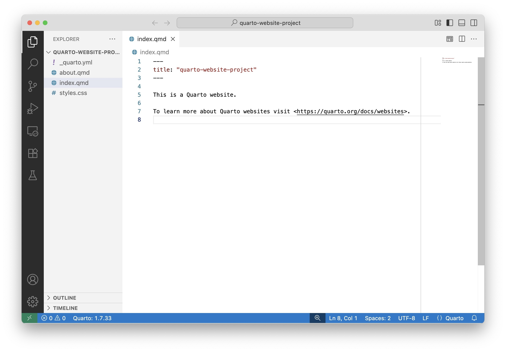
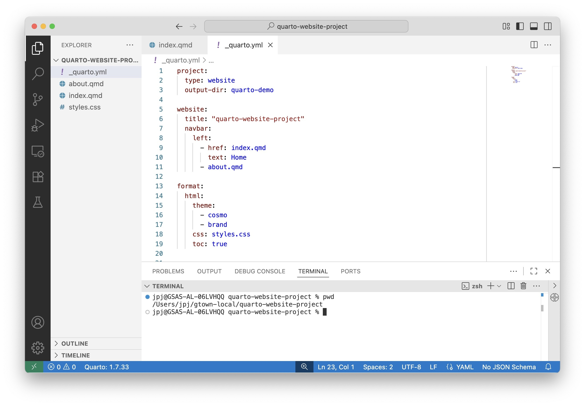
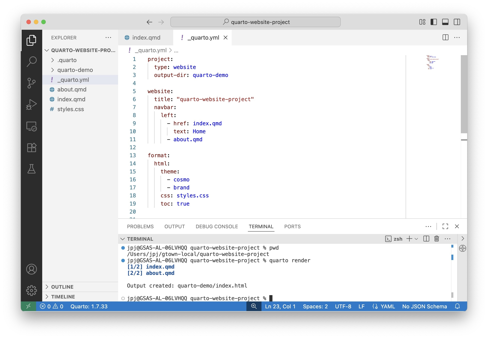
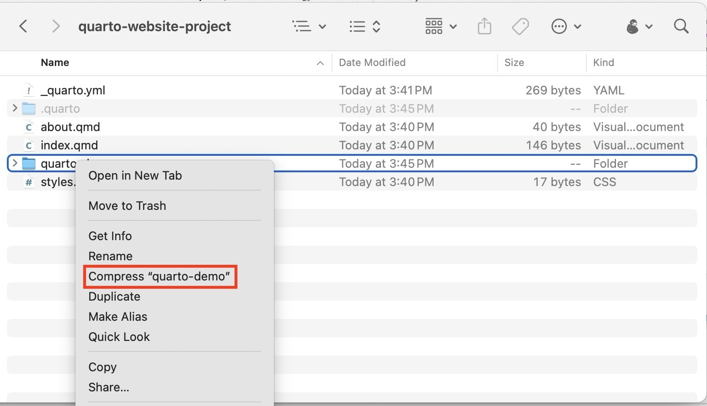
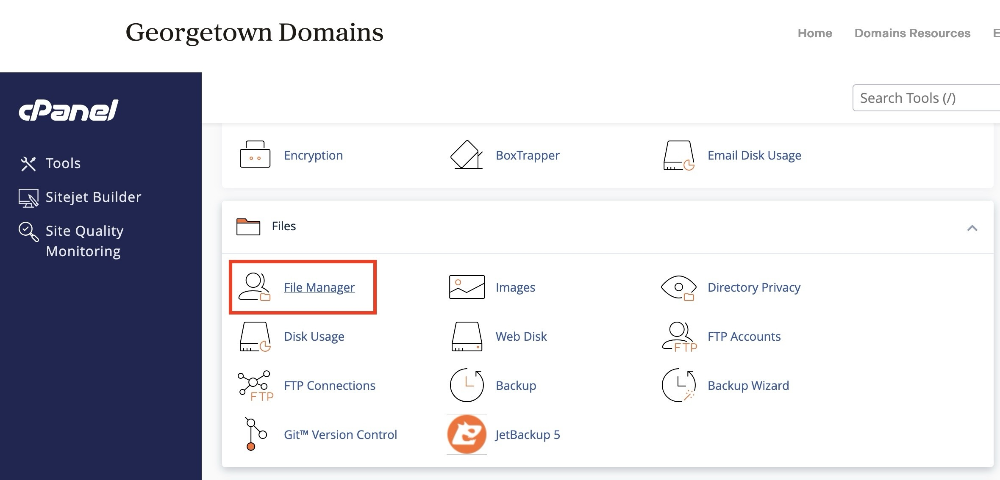
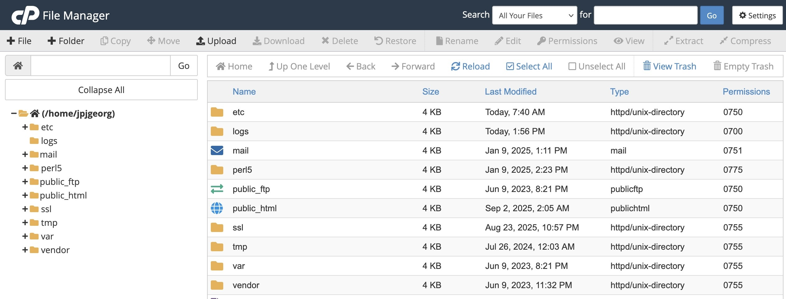
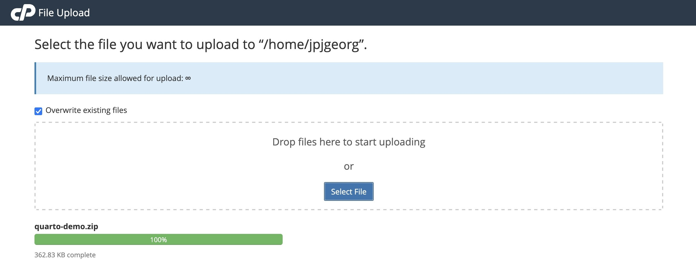
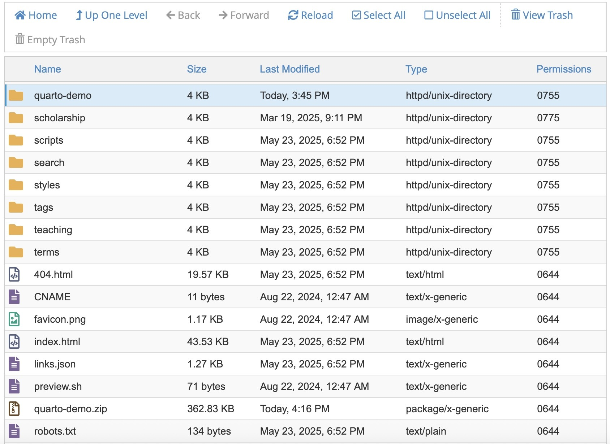
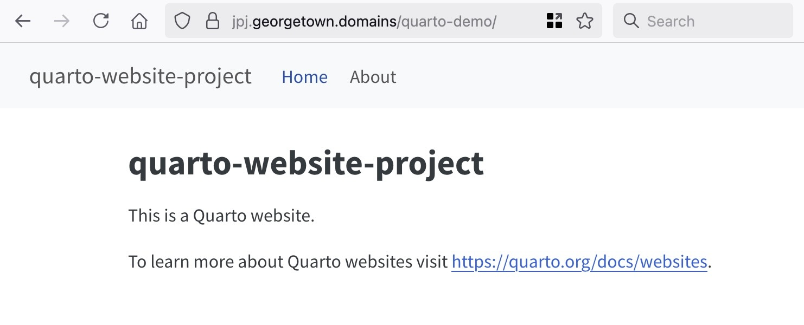

Getting Quarto Websites Online Quickly with GU Domains
This guide assumes you have a Quarto website that you’ve created within a folder on your local computer (using VSCode with the Quarto extension), and walks you through how to quickly deploy that website to the web using the Georgetown Domains service available to Georgetown affiliates.
Step 1: Open the Website in VSCode
Within the VSCode interface, you can use the top menubar to open the folder containing your website by clicking File → Open Folder….
After loading the main folder containing your website, the VSCode interface should update so that you can see the various files and subfolders in the Explorer Panel on the left side of the interface:

Step 2: Update Output Directory
By default, if you run the quarto render command in a terminal here, Quarto will render the content of your website to a subfolder named _site. (So, in this case, it would render to my-quarto-website/_site).
This default setting can get very confusing very quickly when working with GU Domains, however, since you may want to have several different sites hosted on your GU Domains space. For example, you might want to:
- Have your DSAN 5600 project available at
https://myname.georgetown.domains/dsan5600-project, but - Have your DSAN 5000 project available separately at
https://myname.georgetown.domains/dsan5000-project.
To make your life easier, therefore, I recommend changing the default output directory used by Quarto from _site to something more descriptive of what your site is about. In this case, I’ll change it to quarto-demo, by opening the _quarto.yml file which contains the “global settings” for the website, and adding the option output-dir: quarto-demo to the project section near the top of the file. That is, by changing these first few lines which the default Quarto website setup creates:
project:
type: websiteTo now look like:
project:
type: website
output-dir: quarto-demoStep 3: Rendering to the New Output Directory
Now that we’ve set the custom output directory using the output-dir option, start a new Terminal within VSCode. You can either click Terminal → New Terminal in the VSCode menubar or right click somewhere in the Explorer pane and select the “Open in Integrated Terminal” option.
Once the Terminal opens in the bottom pane of the VSCode interface, make sure it is running from within the main directory of your website. In the following screenshot, for example, I can verify that my Terminal is in the correct working directory by executing the pwd command and checking that the working directory produced by this command matches the directory that contains my entire website project:

Once you’ve confirmed that the Terminal is running in the correct working directory, execute the command quarto render. You should see the different pages of your website being rendered to a subfolder whose name is whatever you set the output-dir option to in the previous step!
In this case, since we set output-dir: quarto-demo, the site renders to a subdirectory named quarto-demo:

Step 4: Deploying the Rendered Site to GU Domains
The key thing to note about this newly-generated output directory (the quarto-demo directory, in this case) is that it contains the entirety of what you need to copy onto GU Domains to make your site accessible on the web.
In other words, you do not need to copy the entire website project onto GU Domains – your GU Domains space does not need the code files used to generate the website (like index.qmd or _quarto.yml), it only needs the rendered HTML files which are contained in quarto-demo in this case.
This is a important point because, in more complex data science projects, your code may do things like loading and analyzing sensitive data in order to produce a plot illustrating your results. There are many scenarios like this, therefore, where you would not want to expose the full dataset to the web, only the generated results. And that’s why we’re making a big deal here about the difference between the full project folder (quarto-website-project in this case) and the subfolder containing just the rendered results (quarto-demo)!
With this in mind, you can now proceed in one of two ways…
Option 1 [For Quickstart]: Uploading via GU Domains Web Interface
If you just want to post your website as quickly as possible, with minimal hassle – for example, if it’s just an informational website that you don’t think you’ll need to update very often – you can use the GU Domains web interface to quickly upload the contents of quarto-demo (or whatever you called your rendered-files subdirectory).
To do this, first go into the Finder (on Mac) or Windows Explorer (on Windows) and compress the rendered directory to a .zip file. So, in this case, I’ve compressed the quarto-demo folder to create quarto-demo.zip:

Next, open your browser and navigate to the GU Domains Dashboard at https://georgetown.domains/dashboard, then scroll down until you find the File Manager:

Click on this icon to open the GU Domains web interface, which allows you to view and edit the pages on your GU Domains space:

There is a special folder called public_html among the folders displayed here, however, with a globe icon next to it to indicate its special-ness.
Double-click on this public_html folder to open it. This folder is special because it is the folder from which your myname.georgetown.domains account serves files onto the internet!
For example:
- If you added a new file called
hello.htmlto thispublic_htmlfolder, anyone navigating tohttps://myname.georgetown.domains/hello.htmlwould see its contents - If you added a new folder named
my-cool-sitewithinpublic_html, then added anindex.htmlfile within thismy-cool-sitesubfolder, anyone navigating tohttps://myname.georgetown.domains/my-cool-sitewould see the contents of thisindex.htmlfile (sinceindex.htmlis the “default” file that web servers send to the browser if no specific file within the folder is specified in the URL).
So, given this, what’s left for you is to upload the compressed .zip file you created at the beginning of this section to the public_html folder. Here it can be useful to check “Overwrite existing files” since this ensures that any previously-uploaded version of the website is updated to the new version you’re uploading now:

Once this upload has completed, you can return to the file manager interface, right-click on the .zip file, and choose the Extract option. By leaving the default setting (of extracting to the public_html folder), you should now see the unzipped version of your site listed as a folder within the interface (so, with the .zip extension gone, and the ability to double-click on it to view its contents):

You should now be able to open your browser and navigate to the URL https://yourname.georgetown.domains/quarto-demo to see the rendered homepage of your website! Here is what it looks like in my case, when I navigate to https://jpj.georgetown.domains/quarto-demo:

Option 2 [For Regularly-Updated Sites]
If you plan to update your website more than once, this is the more recommended option, where instead of the earlier ad hoc uploading of a .zip file, we’ll use the scp command in Terminal to copy the rendered website directory onto GU Domains directly.